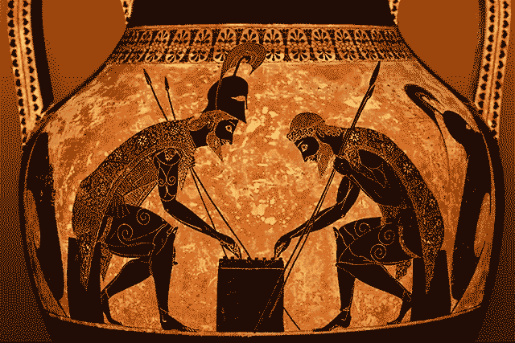
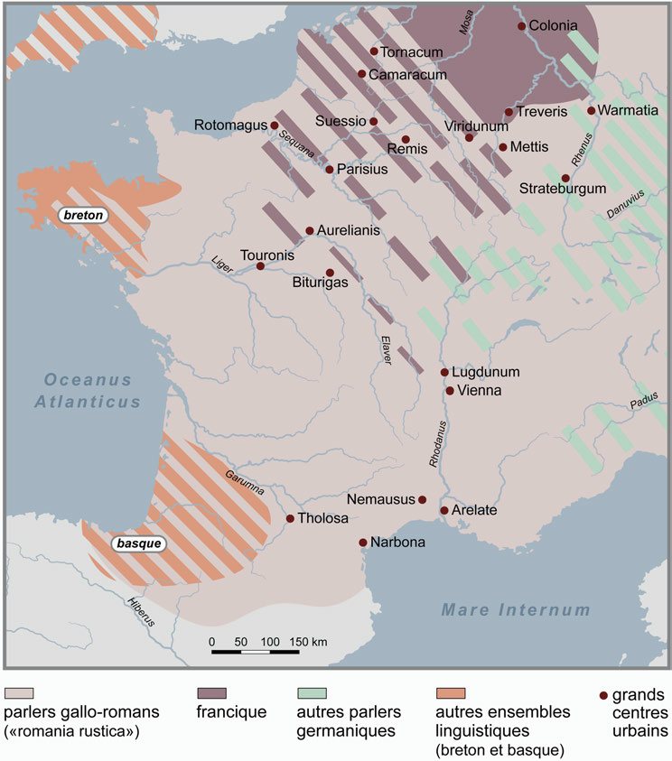
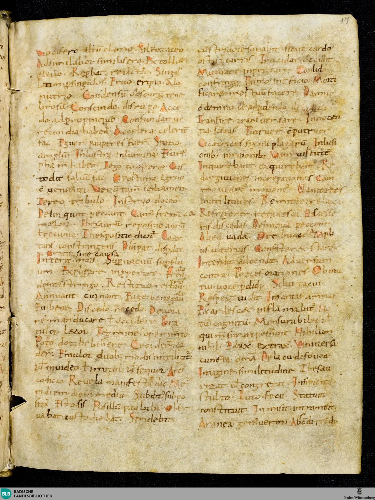
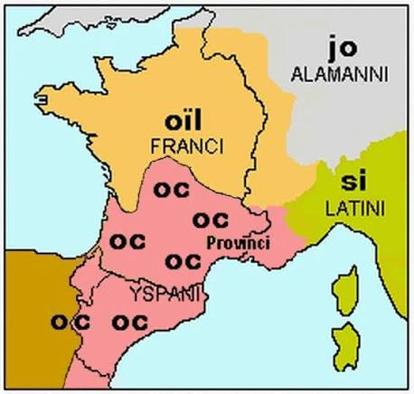
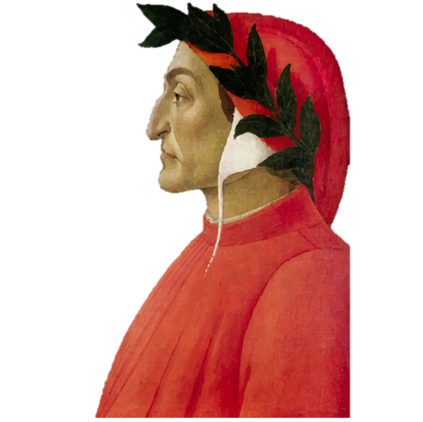
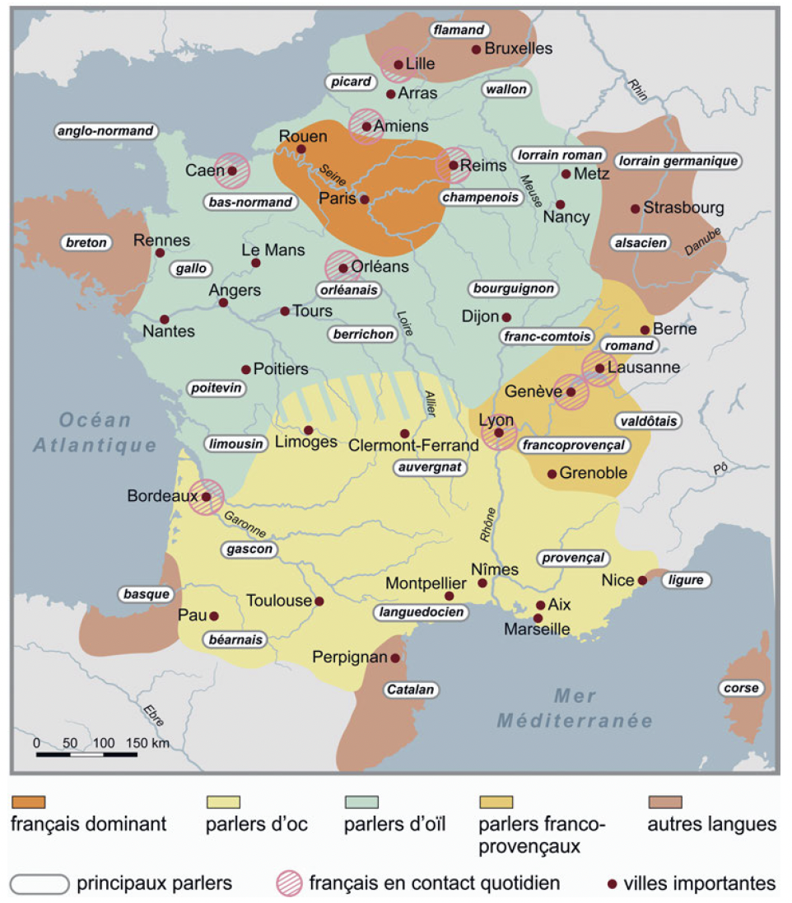
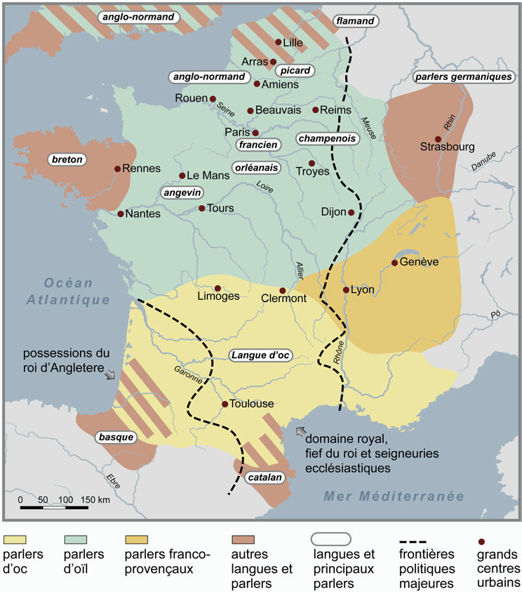
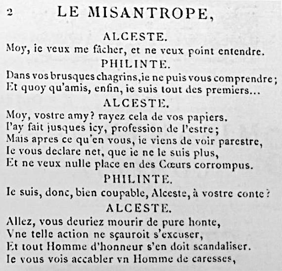
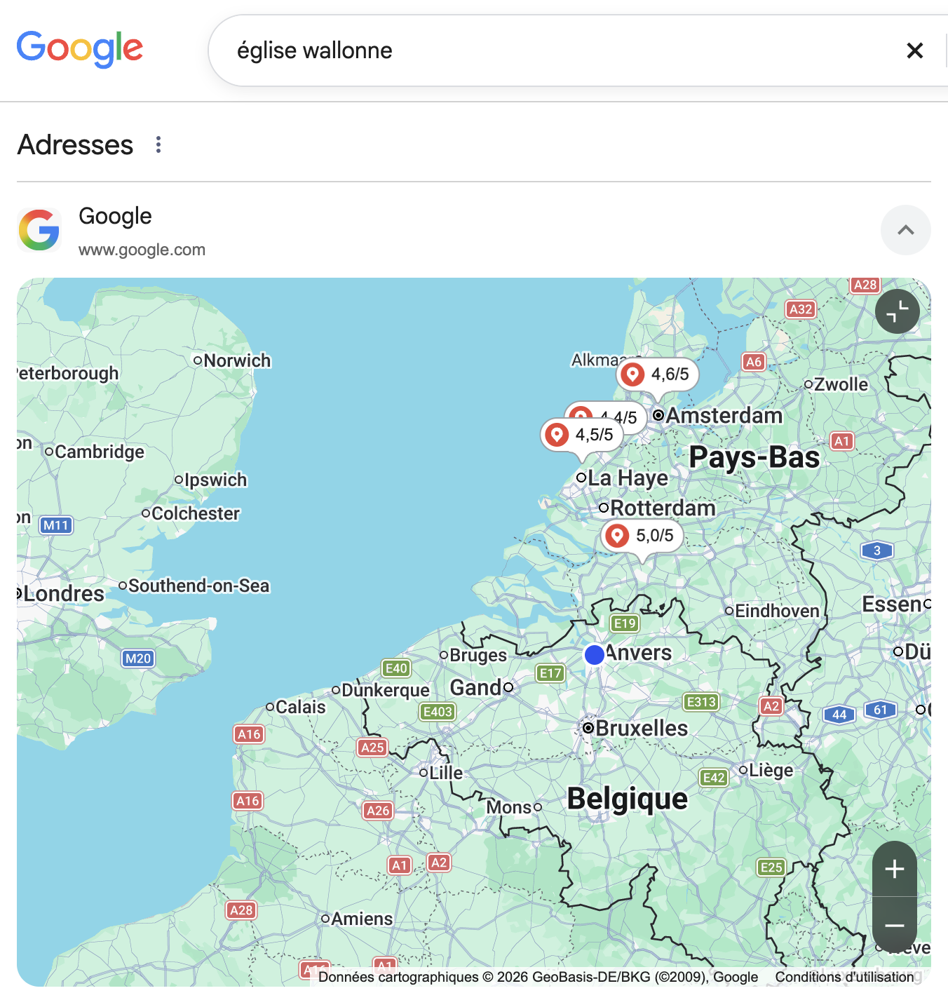
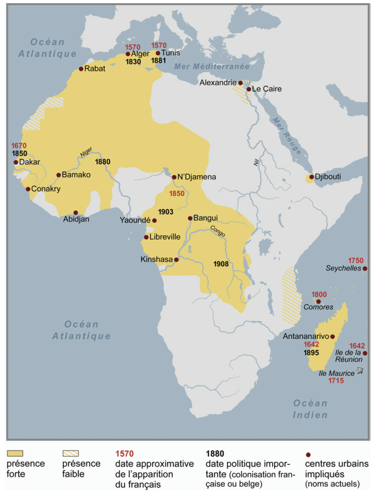

Notions de linguistique historique
- Linguistique interne vs linguistique externe
Notion introduite par Brunot
L’histoire du français, ce sera donc d’une part l’histoire du développement qui, de la langue du légionnaire, du colon ou de l’esclave romain, a fait la langue parlée aujourd’hui par un faubourien, un « banlieusard », ou écrite par un académicien. Nous appellerons cette histoire-là, l’histoire interne. L’histoire de la langue française, ce sera d’autre part l’histoire de tous les succès et de tous les revers de cette langue, de son extension en dehors de ses limites originelles – si on peut les fixer. Nous appellerons cette partie l’histoire externe (Ferdinand Brunot 1905 : t. I, Préface, p. V).

Reprise et étendue par Saussure
« Est interne tout ce qui change le système à un degré quelconque », Saussure (1989 : 59).
3.1 Facteurs « externes » à prendre en considération
À votre avis ?
D’après le Cours de Saussure :
Données géographiques, démographiques, historiques (modification des frontières, etc.), sociales, culturelles, pratiques, matérielles.
Interventions extérieures sur les parlers : décisions politiques, administratives, modification des codes, du statut des parlers, réformes.
Modifications introduites dans les parlers par l’existence du fait variationnel :
Les différents types de variation, du point de vue de l’appréciation concrète de leurs poids respectifs.
L’opposition langue commune / langues de spécialité.
Les phénomènes de standardisation et de déstandardisation.
Contacts avec d’autres parlers ou idiomes :
Niveaux d’usage du point de vue des locuteurs : colinguismes, plurilinguismes, diglossies.
Rôle des supports (formes d’oral, formes d’écrit).
Rôle des facteurs de conscience et de transmission :
Les textes métalinguistiques.
Les modes d’enseignement et leur changement.
Niveaux d’usage dont la nature et la hiérarchie diffèrent selon les époques.
3.2 Des périodisations différentes entre linguistique interne et externe ?
But : présenter une histoire (du français) et ses différentes périodes.
Mais est-ce que cette périodisation doit correspondre en tout point à la périodisation des historiens ?
3.2.1 En linguistique interne
- Les linguistes ont pour habitude de regrouper un cumul significatif de traits linguistiques pour distinguer différentes périodes présentant une certaine cohérence et durant laquelle la langue aurait franchi une étape
- Par exemple :
| Ferdinand Brunot | Jacques Chaurand (1999) |
|---|---|
| Le Moyen Âge | Le plus ancien français |
| Le seizième siècle | L’ancien français (12e-13e s.) |
| La langue classique | Le moyen français |
| Le dix-huitième siècle | Le français classique et post-classique |
| L’époque romantique | Le français d’hier |
| La deuxième moitié du dix-neuvième siècle | Le français d’aujourd’hui |
- Mais ce sont toujours des périodisations fortement liées aux réalités externes à la langue
Voici une périodisation davantage basée sur une histoire essentiellement interne de la langue:
Période Dates Très ancien français 9ᵉ–11ᵉ siècles Ancien français 12ᵉ–13ᵉ siècles Moyen français 1300–1550 Français pré-classique 1550–1650 Français classique 1650–1800 Français post-classique 1800–1900 Français moderne 1800–2000 Français contemporain 2000-…
Mais quand est-ce qu’un changement devient important ?
Phonétique ?
Phonétique + morphologie ?
Phonétique + morphologie + syntaxe ?
etc.
3.2.1.1 Les critères de délimitation?
Définition des bornes :
- Première occurrence d’un phénomène VS sa généralisation dans la langue.
- Identification du domaine linguistique aux évolutions les plus décisives (phonétique, syntaxe, morphologie).
Divergences sur les bornes du « Moyen Français »
| Linguiste(s) | Période attribuée |
|---|---|
| Wartburg (1934) | 13ᵉ, 14ᵉ et 15ᵉ siècles |
| Caput (1972), Wolf (1979) | 14ᵉ et 15ᵉ siècles |
| Nyrop (1899-1930), Chaurand (1969) | 14ᵉ, 15ᵉ et 16ᵉ siècles |
| Vossler (1913) | 1270 – 1498 |
| Brunot & Bruneau (1937) | 1285/1304 – 1476/1482 |
| Picoche & Marchello-Nizia (1994) / Guiraud (1963) | 1352 – 1605 |
Dans le fond, on essaye de répondre aux mêmes questions à propos du changement linguistique : quelles sont les zones touchées et à quel moment ? Est-il rapide, lent ? Et pourquoi ?
3.2.2 En linguistique externe
On peut juger qu’un certain nombre de faits relevant de l’histoire externe peuvent malgré tout présenter un caractère démarcatoire :
- Événements politiques et démographiques :
- Invasions germaniques (5ᵉ-6ᵉ s.)
- Décolonisation
- Évolutions technologiques et supports :
- Invention de l’imprimerie
- Avènement du support numérique
- Statut, fonctions et enseignement :
- Abandon du latin dans certaines fonctions discursives
- Apparition d’un enseignement de masse du français en français
- Expansions géographiques et culturelles :
- Diffusion du français hors de ses domaines d’origine (via la culture ou la colonisation)
Mais ces événements sont difficilement datables.
Et si on choisit une date symbole,…
Faire coïncider des périodisations en histoire interne et des périodisations en histoire externe est risqué.
Au final : souvent des compromis (#🇧🇪) à visée pédagogique.
3.3 Quelques repères historiques, démographiques et géographiques
3.3.1 Le substrat latin et la dialectalisation
3.3.1.1 Il était une fois
Premières langues parlées sur le territoire actuel de la France
Hypothèses très fragiles
Langue non indo-européennes
Basque
Langues ibériques
3.3.1.2 Expansion des peuples indo-européens (6000 av. J.-C.)
- Peuples à la recherche de nouvelles terres agricoles.
- Importent de nouvelles langues.
- Par exemple, au sud :
3.3.1.2.1 Les Ligures
Les suffixes gallo-romans en -ascus, comme dans Manosque
calanque, avalanche

3.3.1.3 Importance des Grecs en Méditerranée (600 av. J.-C.)
- Quelques toponymes, mais pas plus.

Astuce
Définition
Toponyme : nom de lieu.
3.3.1.4 Invasion des Celtes (500 av. J.-C.)
Invasion celte la plus massive vers 500 av. J.-C.
Mélange de population avec les Ibères
3.3.1.4.1 Les Gaulois
Les noms en -dun, comme Verdun ; les noms en Ar-, comme Arles.
Vocabulaire de la nature : chamois, chêne.
Agriculture : soc, charrue, boue.
Armes : lance, glaive.
Numérotation vicésimale : quatre-vingts.
.gif)
La conquête de la Gaule par les Romains et l’absence d’écriture de la langue gauloise ont contribué à ce qu’un nombre extrêmement réduit de mots d’origine gauloise — passés par le latin parlé — ait subsisté en français. Dans le texte ci-dessous, repérez tous les mots d’origine gauloise. Attention aux pièges !
En sortant du boulot, en longeant les berges (j’aime bien regarder les barques), j’ai retrouvé par hasard mon pote Clovis. Un gars bien charpenté, raie au milieu, petit bouc au menton, solide comme un chêne. Il était arrêté sur le bord du chemin, plein de boue (faut dire que ça tombait dru), près d’un talus, en train de vérifier sa jante qui venait de frotter la bruyère. On a réparé son char et je lui ai proposé d’aller boire un coup au bistrot du coin. J’ai pris un demi d’une bière brassée localement, lui une pinte de cervoise, et on a papoté du temps qui passe. J’étais à des lieues d’imaginer qu’il conduisait l’une de ces bennes que je vois passer tous les jours ! On a tellement barjaqué qu’on est restés manger : on a hésité entre de l’aloyau, du mouton et du jarret, mais finalement on s’est jetés sur un civet de sanglier. Quand le serveur a commencé à passer le balai, on s’est dit qu’il était temps d’y aller ; j’ai réglé l’ardoise, et je lui ai dit : « À la revoyure ! »
Correction
berges
barques
charpenté
raie
bouc
chêne
chemin
boue
dru
talus
jante
bruyère
char
brassée
cervoise
lieues
bennes
aloyau
mouton
jarret
balai
ardoise
3.3.1.5 Colonisation romaine (150 av. J.-C.)
3.3.1.5.1 Gaule transalpine (vs cisalpine)
Début en 150 av. J.-C. par la région de Narbonne.
Provincia, d’où vient le nom Provence.
Histolf
3.3.1.5.2 Trois gaules (Belgique, Aquitaine et Celtique/Lyonnaise)
- 59–51 avec Jules César et sa Guerre des Gaules (Bellum Gallicum).
- Romanisation politique & culturelle → romanisation linguistique.
- Entièrement romanisée en 51 av., seul subsiste un petit bastion de résistance en Bretagne.
La langue gauloise a pu persister en parallèle du latin jusqu’au Ve, VIᵉ voire peut-être VIIᵉ siècle.
Mais s’arrête petit à petit avec la christianisation, qui se fait bel et bien en latin.
La diglossie entre gaulois vernaculaire et latin véhiculaire a pu perdurer assez longtemps :
- Le gaulois perdure surtout dans des régions éloignées (Auvergne et Alpes).
Définitions
Diglossie : Situation linguistique d’un groupe humain qui pratique deux langues en leur accordant des statuts hiérarchiquement différents.
Vernaculaire : du pays, propre au pays
Véhiculaire : qui sert aux communications entre des communautés de langue maternelle différente
3.3.1.6 Division du latin
Latin écrit bien normé.
Latin parlé cultivé.
Latin parlé populaire, sermo rusticus :
manducare (« mastiquer ») remplace edere (« manger »).
testa (« tesson de poterie ») remplace caput (« tête »).
Changements phonétiques : perte de l’opposition entre voyelles longues et brèves.
Appendix Probi
Liste rédigée par un professeur d’école du Ve siècle.
aqua non acqua
auris non oricla
calida non calda
columna non colomna
oculus non oclus
speculum non speclum
februarius non febrarius
masculus non masclus
vetulus non veclus
lancea non lancia
favilla non failla
Hercules non Herculens

A non B = « dites A, et non B ». La forme condamnée reflète la langue parlée, plus proche du roman.
Devinez le mot français qui en est issu.
| Latin « correct » | Forme condamnée | Mot français ? | |
|---|---|---|---|
| aqua | non | acqua | |
| auris | non | oricla | |
| calida | non | calda | |
| columna | non | colomna | |
| oculus | non | oclus | |
| speculum | non | speclum | |
| februarius | non | febrarius | |
| masculus | non | masclus | |
| vetulus | non | veclus | |
| lancea | non | lancia | |
| favilla | non | failla | |
| Hercules | non | Herculens |
3.3.1.6.1 Correction
| Latin « correct » | Forme condamnée | Mot français ? | |
|---|---|---|---|
| aqua | non | acqua | eau |
| auris | non | oricla | oreille |
| calida | non | calda | chaude |
| columna | non | colomna | colonne |
| oculus | non | oclus | œil |
| speculum | non | speclum | « miroir » it. specchio) |
| februarius | non | febrarius | février |
| masculus | non | masclus | mâle |
| vetulus | non | veclus | vieil / vieux |
| lancea | non | lancia | lance |
| favilla | non | failla | « étincelle » cf. it. favilla |
| Hercules | non | Herculens | Hercule |
3.3.1.7 Dialectalisation
Dialectalisation différenciée selon les régions :
Narbonnaise : conservation d’un fond lexical latin qu’on retrouve en occitan.
Aquitaine : imprégnation latine faible, au profit du basque.
Auvergne : maintien de pratiques linguistiques traditionnelles dans le domaine administratif.
Début de la dialectalisation vers le Ve siècle, mais plus complète au VIIIᵉ siècle.
- Peu d’informations (et documents) sur cette période.
3.3.1.8 Influences précoces
3.3.1.8.1 Influence germanique
- Dès 250, les Alamans et les Francs mettent en danger le limes romain.
- Germanophones s’installent en Gaule (surtout après la victoire sur Probus).
- Plusieurs vagues de peuplement entre le IIIᵉ et le VIᵉ siècle :
Francs saliens : partie basse, rive gauche du Rhin.
Francs rhénans : partie droite.
Burgondes : centre.
Ostrogoths : sud-est.
Wisigoths : Languedoc et sud-ouest.
En 465, Clovis, roi des Francs, installe son royaume au nord de la France actuelle.
Le royaume s’étend de plus en plus (souvent avec l’aval de l’élite gallo-romaine).
Démographiquement, les Francs restent minoritaires (≈ 5 %) → la langue majoritaire reste le latin.
Le francique disparaît durant le VIIᵉ siècle et ils adoptent le latin (aussi comme langue religieuse).

Traces de cette époque :
Évolution de [w] en gutturale (sur mots germaniques et latins) :
Francique werra → guerre
Latin uastare → gâter
Diphtongaison : suraccentuation de la voyelle tonique.
Suffixes adjectivaux / nominaux : -ard (ex. campagnard, de hard), -er, -ier, -and, -ais, -aud.
Préfixe : mé- / més- (ex. mésestimer).
suffixes verbaux en en -ir (ex. choisir).
Terminaison -ons de la 1ʳᵉ personne du pluriel.
Lexique
Guerre et armes : épieu, hache.
Couleurs : bleu, blanc, gris, brun.
Vie quotidienne & vêtements : écharpe, gant.
Agriculture & nature : blé, bois, forêt.
Institutions & noblesse : baron, marquis, fief.
Sentiments : orgueil, honte, haïr.
Adverbes : trop.
En 760, l’ancien royaume des Francs passe aux mains de Charlemagne.
Charlemagne : langue francique rhénane.
Ambition de restaurer l’Empire romain → redonne importance au latin.
Trop tard : le changement du latin parlé mérovingien en proto-français s’était pratiquement achevé.
Gloses de Reichenau (Fin du VIIIᵉ siècle)
Listes d’équivalences rédigées probablement en Picardie pour aider les moines à lire le latin classique de la Vulgate.
L’un des premiers témoins écrits de la perte de compréhension du latin classique, devenu une langue savante nécessitant un dictionnaire.
Exemples de substitutions lexicales :
singulariter → solamente (« seulement »)
oves → berbices (« brebis »)

Concile de Tours (813)
- Reconnaissance officielle : la lingua romana rustica (roman parlé) est déclarée langue de prédication pour les homélies, à côté de la lingua teudisca (germanique).
Coexistence des deux langues
- Illustrée par les Serments de Strasbourg ou l’Histoire des fils de Louis le Pieux de Nithard (842).
- Texte en latin + version en « tudesque » + version en parler « roman ».

Traité de Verdun (843)
Empire de Charlemagne divisé entre ses trois fils :
Francie orientale : surtout parlers germaniques.
Lotharingie : parlers germaniques au nord, romans au sud.
Francie occidentale : réalité composite, mais frontière entre parlers influencés par le germanique au nord (dialectes d’oïl) et les autres (dialectes d’oc).
Note
- Aujourd’hui, on parlerait plutôt de langues vernaculaires.
- Nous parlons de langues qui se sont développées à partir du latin classique, mais qui ne lui ressemblent plus.
- De vulgari eloquentia, de Dante Alighieri.


3.3.1.8.2 Influence celtique
- Entre 450 et 650, des peuplements celtes venus de Grande-Bretagne installent le breton en Armorique.
- Peu d’influence sur les parlers romans (gallo) et français.
3.3.2 Dialectalisation romane
3.3.2.0.1 La Séquence de sainte Eulalie (v. 881)
Buona pulcella fut Eulalia.
Bel auret corps bellezour anima.
Voldrent la ueintre li d[õ] inimi.
Voldrent la faire diaule servir
Elle nont eskoltet les mals conselliers.
Quelle d[õ] raneiet chi maent sus en ciel.
Ne por or ned argent ne paramenz.
Por manatce regiel ne preiement,
Niule cose non la pouret omq[ue] pleier.
La polle sempre n[on] amast lo d[õ] menestier.
E por[ ]o fut p[re]sentede maximiien.
Chi rex eret a cels dis soure pagiens.
Il[ ]li enortet dont lei nonq[ue] chielt.
Qued elle fuiet lo nom xr[ist]iien.
Ellent adunet lo suon element
Melz sostendreiet les empedementz.
Quelle p[er]desse sa uirginitet.
Por[ ]os furet morte a grand honestet.
Enz enl fou la getterent com arde tost.
Elle colpes n[on] auret por[ ]o nos coist.
A[ ]czo nos uoldret concreidre li rex pagiens.
Ad une spede li roueret tolir lo chief.
La domnizelle celle kose n[on] contredist.
Volt lo seule lazsier si ruouet krist.
In figure de colomb uolat a ciel.
Tuit oram que por[ ]nos degnet preier.
Qued auuisset de nos Xr[istu]s mercit
Post la mort & a[ ]lui nos laist uenir.
Par souue clementia.
Bel auret corps bellezour anima.
Voldrent la ueintre li d[õ] inimi.
Voldrent la faire diaule servir
Elle nont eskoltet les mals conselliers.
Quelle d[õ] raneiet chi maent sus en ciel.
Ne por or ned argent ne paramenz.
Por manatce regiel ne preiement,
Niule cose non la pouret omq[ue] pleier.
La polle sempre n[on] amast lo d[õ] menestier.
E por[ ]o fut p[re]sentede maximiien.
Chi rex eret a cels dis soure pagiens.
Il[ ]li enortet dont lei nonq[ue] chielt.
Qued elle fuiet lo nom xr[ist]iien.
Ellent adunet lo suon element
Melz sostendreiet les empedementz.
Quelle p[er]desse sa uirginitet.
Por[ ]os furet morte a grand honestet.
Enz enl fou la getterent com arde tost.
Elle colpes n[on] auret por[ ]o nos coist.
A[ ]czo nos uoldret concreidre li rex pagiens.
Ad une spede li roueret tolir lo chief.
La domnizelle celle kose n[on] contredist.
Volt lo seule lazsier si ruouet krist.
In figure de colomb uolat a ciel.
Tuit oram que por[ ]nos degnet preier.
Qued auuisset de nos Xr[istu]s mercit
Post la mort & a[ ]lui nos laist uenir.
Par souue clementia.
Retrouvez dans la grille ces mots du texte, dans leur graphie d’origine :
JEUNE FILLE · DIEU · DIABLE · TOUJOURS · ROI · PAÏENS · CHRIST · VIRGINITÉ · TÊTE · DEMOISELLE · CLÉMENCE
| X | W | D | C | L | E | M | E | N | T | I | A | C | I |
| C | H | O | O | G | H | D | H | W | L | V | U | U | G |
| O | A | M | P | U | L | C | E | L | L | A | L | M | E |
| E | K | N | U | B | W | J | L | K | Z | J | S | R | S |
| V | L | I | N | U | R | W | Y | R | Z | N | E | X | X |
| O | G | Z | A | O | C | V | M | I | Q | L | M | S | S |
| L | A | E | U | N | H | N | X | S | U | I | P | J | H |
| X | D | L | D | A | I | V | D | T | F | G | R | F | T |
| R | A | L | X | J | E | S | C | V | E | D | E | O | J |
| G | F | E | B | D | F | R | Q | R | E | X | O | J | Q |
| D | I | A | U | L | E | P | A | G | I | E | N | S | X |
| D | U | U | V | O | N | L | Q | R | N | O | A | T | X |
| F | G | R | O | I | M | H | X | G | Q | O | E | B | C |
| K | S | U | I | R | G | I | N | I | T | E | T | Q | P |
Correction
Buona pulcella fut Eulalia.
Bel auret corps bellezour anima.
Voldrent la ueintre li d[õ] inimi.
Voldrent la faire diaule servir
Elle nont eskoltet les mals conselliers.
Quelle d[õ] raneiet chi maent sus en ciel.
Ne por or ned argent ne paramenz.
Por manatce regiel ne preiement,
Niule cose non la pouret omq[ue] pleier.
La polle sempre n[on] amast lo d[õ] menestier.
E por[ ]o fut p[re]sentede maximiien.
Chi rex eret a cels dis soure pagiens.
Il[ ]li enortet dont lei nonq[ue] chielt.
Qued elle fuiet lo nom xr[ist]iien.
Ellent adunet lo suon element
Melz sostendreiet les empedementz.
Quelle p[er]desse sa uirginitet.
Por[ ]os furet morte a grand honestet.
Enz enl fou la getterent com arde tost.
Elle colpes n[on] auret por[ ]o nos coist.
A[ ]czo nos uoldret concreidre li rex pagiens.
Ad une spede li roueret tolir lo chief.
La domnizelle celle kose n[on] contredist.
Volt lo seule lazsier si ruouet krist.
In figure de colomb uolat a ciel.
Tuit oram que por[ ]nos degnet preier.
Qued auuisset de nos Xr[istu]s mercit
Post la mort & a[ ]lui nos laist uenir.
Par souue clementia.
Bel auret corps bellezour anima.
Voldrent la ueintre li d[õ] inimi.
Voldrent la faire diaule servir
Elle nont eskoltet les mals conselliers.
Quelle d[õ] raneiet chi maent sus en ciel.
Ne por or ned argent ne paramenz.
Por manatce regiel ne preiement,
Niule cose non la pouret omq[ue] pleier.
La polle sempre n[on] amast lo d[õ] menestier.
E por[ ]o fut p[re]sentede maximiien.
Chi rex eret a cels dis soure pagiens.
Il[ ]li enortet dont lei nonq[ue] chielt.
Qued elle fuiet lo nom xr[ist]iien.
Ellent adunet lo suon element
Melz sostendreiet les empedementz.
Quelle p[er]desse sa uirginitet.
Por[ ]os furet morte a grand honestet.
Enz enl fou la getterent com arde tost.
Elle colpes n[on] auret por[ ]o nos coist.
A[ ]czo nos uoldret concreidre li rex pagiens.
Ad une spede li roueret tolir lo chief.
La domnizelle celle kose n[on] contredist.
Volt lo seule lazsier si ruouet krist.
In figure de colomb uolat a ciel.
Tuit oram que por[ ]nos degnet preier.
Qued auuisset de nos Xr[istu]s mercit
Post la mort & a[ ]lui nos laist uenir.
Par souue clementia.
| x | w | D | C | L | E | M | E | N | T | I | A | c | i |
| c | h | O | o | g | h | d | h | w | l | v | u | u | g |
| o | a | M | P | U | L | C | E | L | L | A | l | m | e |
| e | k | N | u | b | w | j | l | K | z | j | S | r | s |
| v | l | I | n | u | r | w | y | R | z | n | E | x | x |
| o | g | Z | a | o | C | v | m | I | q | l | M | s | s |
| l | a | E | u | n | H | n | x | S | u | i | P | j | h |
| x | d | L | d | a | I | v | d | T | f | g | R | f | t |
| r | a | L | x | j | E | s | c | v | e | D | E | O | j |
| g | f | E | b | d | F | r | q | R | E | X | o | j | q |
| D | I | A | U | L | E | P | A | G | I | E | N | S | x |
| d | u | u | v | o | n | l | q | r | n | o | a | t | x |
| f | g | r | o | i | m | h | x | g | q | o | e | b | c |
| k | s | U | I | R | G | I | N | I | T | E | T | q | p |
- JEUNE FILLE = PULCELLA
- DIEU = DEO
- DIABLE = DIAULE
- TOUJOURS = SEMPRE
- ROI = REX
- PAÏENS = PAGIENS
- CHRIST = KRIST
- VIRGINITÉ = UIRGINITET
- TÊTE = CHIEF
- DEMOISELLE = DOMNIZELLE
- CLÉMENCE = CLEMENTIA
3.3.2.1 Invasions vikings
À partir du IXᵉ siècle, plusieurs vagues d’invasions de peuples parlant le norroi.
En 911, Charles le Simple leur concède un territoire qui deviendra la Normandie.
Les habitants délaissent leur langue (néanmoins parlée jusqu’au XIIᵉ siècle), mais le français hérite de quelques toponymes et termes maritimes :
quai
hauban
quille
Les Normands exportent eux-mêmes la langue française :
En Angleterre au XIᵉ siècle (Hastings, 1066).
Dans le sud de l’Italie et en Sicile au XIIᵉ siècle.
Dans le texte ci-dessous, repérez les mots d’origine germanique et les mots d’origine normande.
C’est ici, sur ce quai, que les marins hardis et pleins d’orgueil, au visage taillé à la hache, aux cheveux blancs, aux yeux gris et bleus, embarquent pour aller défier les vagues, le tangage et le vent cinglant, perchés dans les haubans. Plus que des vieux loups de mer, ce port est le fief des homards ou des crabes de l’écume.
Correction
- Germanique :
- hardis
- orgueil
- hache
- blancs
- gris
- bleus
- fief
- Normand :
- vagues
- tangage
- cinglant
- haubans
- homards
- crabes
- écume
3.3.2.2 Fragmentation dans le Nord de la France
Absence d’un pouvoir centralisateur : accentue la fragmentation linguistique.
L’organisation féodale accentue aussi la différenciation.
Le latin reste une langue de culture supradialectale.
Opposition avec le Sud, où la situation est plus unifiée, avec des variétés romanes supradialectales de culture.
- Toulouse : comme illustré par les troubadours.
picard, wallon, normand, champenois, lorrain, bourguignon, gallo, dialectes de l’ouest
Deux variétés avec ambition littéraire : le normand et le picard.
Nombreux particularismes.
Il y a néanmoins intercompréhension.
Flexibilité langagière, sans doute du bilinguisme.
Aux frontières : contact avec alsacien, breton, flamand, catalan.
Scripta
Après Sainte Eulalie, on retrouve dans les écrits très peu localisés, mais plutôt des scripta transrégionales pour toucher un plus grand public.
Les scripta ne sont pas le reflet de l’oral. Ces scriptas comportent une majorité de traits communs transdialectaux, et une minorité de traits spécifiques de tel ou tel dialecte (Dees 1985)
Scripta de l’Est, picarde, champenoise, centrale, normande.
Beaucoup des textes qui nous sont parvenus viennent de la scripta issue des pratiques d’Île de France et de Champagne.
3.3.2.3 Que se passe-t-il à l’est ?
Entre Lyon, Genève, Savoie et les variétés alpines du nord de l’Italie :
- Zone d’interférence réunie sous l’appellation franco-provençal.
NoteDéfinition
Isoglosse : en linguistique variationnelle, une isoglosse est, sur une carte géolinguistique, une ligne qui marque les limites à l’intérieur desquelles un trait linguistique donné se retrouve, et hors desquelles ce même trait ne se retrouve pas.
La notion d’une « frontière » entre parlers d’oc et parlers d’oïl est établie à partir du cumul de plusieurs centaines, voire de milliers d’isoglosses portant sur des faits phonétiques.
3.3.2.4 Prestige des dialectes
D’abord un prestige du normand, avec de grandes œuvres (12e s.):
Vie de saint Alexis (ca 1050)
Chanson de Roland (1086–1095)
Eneas (ca 1155)
Rôle grandissant de l’Île-de-France (13 et 14e s..
Le rôle des copistes ne reflète pas particulièrement les dialectes d’Île-de-France, qui sont morcelés.

3.3.2.5 Croisades 11-13e siècles
- Le français se répand en Méditerranée.
- Beaucoup d’interférences et d’innovations dans un contexte de contacts de langues importants.
3.3.2.6 En résumé

3.3.3 Diffusion du français
3.3.3.1 13e et 14e siècle
- Les variétés d’Île-de-France et de ses alentours furent de plus en plus assimilées à du « françois » (lingua gallica), par opposition à la lingua occitana.
- Une scripta supradialectale se répand.
- Une koinè orale acquiert des traits repérables.
Note
Définition
Koinè : langue commune se superposant à un ensemble de dialectes ou de parlers sur une aire géographique donnée.
3.3.3.2 Guerre de Cent ans (1337-1453)
- Longue suite de campagnes militaires.
- Marginalisation du français en Angleterre.
- Extension de l’usage du français vers le Sud.
3.3.3.3 XVe siècle
1490 : ordonnance de Charles VIII pour imposer le français dans les cours du Languedoc.
Les villes commencent à pratiquer un bilinguisme.
Les campagnes demeurent monolingues.
Simplification du système phonétique de l’ancien français
- Perte des diphtongues.
3.3.3.4 XVIe siècle
Nombreux contacts franco-italiens (notamment avec l’arrivée de Catherine de Médicis, épouse d’Henri II).
Quelques contacts avec l’espagnol.
La langue est maintenant décrite : dictionnaires et grammaires.
Ordonnance de Villers-Cotterêts (1539) : renforce l’effet d’ordonnances antérieures pour imposer progressivement le français en lieu et place du latin dans les actes de justice.
La réflexion sur l’idée nationale stimule un certain militantisme politique et culturel en faveur du français, sans pour autant que les parlers soient dévalorisés.
La réflexion sur l’idée nationale stimula un certain militantisme politique et culturel en faveur du français, sans pour autant que les parlers soient dévalorisés.
Oïl : nivellement des parlers d’Ile-de-France
Oc: gascon conserve un certain prestige jusqu’au début du 17e siècle (jusqu’aux réactions anti-gasconnes à la cour d’Henri IV
3.3.3.4.1 Molière en V.O. — énoncé
Vous devez publier Le Misanthrope de Molière (1666) pour un public scolaire, mais vous n’avez qu’un fac-similé dans l’orthographe d’époque. Relevez au moins 15 mots à transcrire en orthographe contemporaine.

3.3.3.4.2 Réponses
| Graphie de 1666 | Graphie actuelle | Graphie de 1666 | Graphie actuelle | |—|—|—|—| | misantrope | misanthrope | estre | être | | moy | moi | apres | après | | ie | je | parestre | paraître | | quoy | quoi | conte | compte | | vostre | votre | deuriez | devriez | | ay (*I’ay*) | ai (*j’ai*) | vne / vn | une / un | | jusques icy | jusqu’ici | sçauroit | saurait | | icy | ici | | |
3.3.3.5 Entre la fin du XVIIᵉ siècle et la Révolution
Grande expansion du français liée à l’extension des frontières du royaume.
Popularisation du français au détriment des langues locales.
Usage grandissant du français comme langue cultivée.
Une vie intellectuelle transnationale apparaît en Angleterre, France, Pays-Bas, Allemagne, Italie, Espagne, Suède et Europe centrale.
3.3.4 Expulsion des huguenots (révocation de l’Édit de Nantes, 1685)
Diffusion du français dans les pays de la Réforme.
Apogée avant le dernier tiers du XVIIIᵉ siècle, où des réactions anti-françaises apparaissent, notamment en Prusse.

3.3.4.1 XVIIIᵉ et XIXᵉ siècles
à votre avis ?
Essor des nationalismes.
Une nation = une culture = une langue.
Sous Napoléon : usage du français stigmatisé en dehors de France.
3.3.4.1.1 Territoires où le français se développe (rôle de l’école)
Corse
Savoie
Belgique
3.3.4.1.2 Territoires où le français recule
- Alsace
3.3.5 (Dé)colonisation
3.3.5.1 Origines dialectales et création de parler régionaux
Origine des colons : Les variétés de français importées en Nouvelle-France (XVIIᵉ–XVIIIᵉ siècle) provenaient principalement de la façade ouest de la France.
Maintien et créolisation : Malgré les pertes territoriales (vente de la Louisiane en 1803), le français est resté langue maternelle pour une partie des populations locales, donnant naissance à différentes variétés de français et à des créoles (notamment dans les Antilles et en Louisiane).
3.3.6 Le français comme instrument de colonisation
- Éducation et purisme : Un accent fort a été mis sur l’enseignement en langue française, instaurant un rapport d’apprentissage fondé sur la rigueur et le purisme.
3.3.7 Statut et évolution post-coloniale
DOM : Dans les Départements d’Outre-Mer (Guadeloupe, Martinique, Réunion, Guyane), le statut de la langue française est resté strictement identique à celui de la France métropolitaine.
Maghreb :
En Algérie, les constitutions de 1963 et 1976 ont officialisé l’arabe et supprimé l’usage du français.
Au Maroc et en Tunisie (indépendants en 1956), des politiques d’arabisation similaires ont fait fortement reculer l’usage du français.
Afrique subsaharienne :
Marqueur social : Le français y est devenu un symbole d’appartenance à l’élite.
Hybridation linguistique : Le contact entre le français et les langues autochtones a créé de nouvelles variétés populaires (ex. : le nouchi en Côte d’Ivoire).

3.4 Depuis quand parle-t-on « français » ?
16ᵉ siècle :
XVIᵉ siècle (point de rupture) : Émergence d’un sentiment d’unité du « français » et apparition de la notion moderne de « langue ».
Avant le XVIᵉ siècle : Bien que le mot langue (lingua) et ses adjectifs soient fréquemment employés pour désigner des idiomes, leur sens reste complexe et difficile à interpréter selon nos critères actuels.
3.4.1 À l’époque classique
- À l’époque classique, les expressions lingua latina et lingua romana sont utilisées de manière interchangeable et s’opposent à la lingua barbara.
3.4.2 Invasion des Francs
- Glissement sémantique : Ce qui est « roman » commence alors à désigner ce qui vient ou ce qui se situe au sud de la Loire, par opposition au nord des Francs.
- On oppose maintenant la lingua thioistica à la lingua romana.
3.4.3 Interpénétration des cultures et Concile de Tours (VIIIᵉ – Xᵉ s.)
L’interpénétration des cultures langagières romaine et germanique constitue un paramètre essentiel.
Le Concile de Tours (813, canon 17) : Demande aux prédicateurs de traduire leurs homélies latines :
« Que chacun s’efforce de traduire (transferre) clairement ces dites homélies en latin des illettrés (in rusticam romanam linguam) ou en germanique (thiotiscam) afin que tous puissent plus facilement comprendre ce qui est dit. »
3.4.4 La réforme carolingienne et la prise de conscience de la distinction latin-roman
La réforme carolingienne du latin : Ce purisme avant la lettre exige des copistes qu’ils se rapprochent des règles des grammairiens, ce qui a pour effet d’éloigner la physionomie écrite du latin des lettrés de ce nouveau vernaculaire aménagé.
Prise de conscience (VIIIᵉ – Xᵉ s.) : Le mot latin est désormais réservé aux usages de l’élite lettrée et de l’Église. Le roman se reconnaît à une graphie, un vocabulaire, une morphologie et une syntaxe différents.
Différenciation géographique :
La France du Nord est le premier endroit où cette différenciation apparaît.
La France du Sud, l’Italie et l’Espagne (dépourvues de pouvoir centralisateur fort et non soumises aux influences germaniques) connaissent une prise de conscience plus tardive (entre le IXᵉ et le XIᵉ s.).
Évolution des termes franceis, francique et gallicus
L’adjectif franceis
Attesté pour la première fois dans la Chanson de Roland (entre 1086 et 1095).
Désigne ce qui est relatif à la France (en latin tardif Francia), la région du nord de la Loire où se sont installés les Francs.
L’adjectif francique
- À la fin du XIXᵉ s. (1872), des linguistes ont créé le mot francique à partir de franciscus pour désigner les dialectes germaniques occidentaux ayant transmis de nombreux mots au français.
L’équivalence avec gallicus
Sur le plan linguistique, franceis (franses en d’oc) traduit plutôt
gallicus(lingua gallica, gallice, idioma gallicum, loqui gallicum), qui sont des expressions plus anciennes.Exemple historique (995) : Lors du synode de Mouzon (près de Sedan), l’évêque Aymon prononce son sermon en « français » (gallice concionatus est), très probablement le dialecte d’oïl local.
Évolution au XIIᵉ s. : L’emploi de franceis pour désigner une variété de langue (et non plus seulement la région) date de la fin du XIIᵉ s. environ. Il renvoie la plupart du temps aux parlers d’oïl en général, comme chez Wace dans le Roman de Rou (1160–1170) ou Chrétien de Troyes dans Lancelot (1176–1181).
Aujourd’hui, la signification de l’expression « parler français » comporte des implications très différentes selon les contextes :
Un cadre institutionnel fort : En France, l’article 2 de la Constitution précise depuis 1992 que « La langue de la République est le français ». L’influence de l’idéologie du standard, largement renforcée par l’institution scolaire, maintient une représentation d’homogénéité malgré les variations réelles.
L’impact sur les représentations locales : Au début du XXᵉ siècle, il n’était pas rare que des locuteurs patoisants déclarent parler « français » lorsqu’on leur demandait de nommer leur langue d’usage, ce qui illustre le poids de ces représentations symboliques.